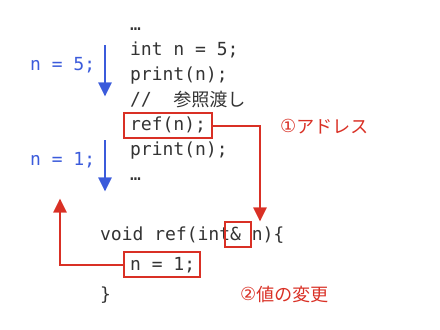

C++言語特有の処理
C++言語の特徴
基本編では、C++言語の基本について説明してきました。その知識だけでも、ある程度実用的なプログラムを作ることは不可能ではありません。しかし、C++言語をオブジェクト指向言語として使いこなすにはまだまだ不十分です。そこで、ここからは、応用編として、C++言語をより使いこなす方法について説明してみることにします。
そこで、手始めに、C++言語とC言語の基本的な違いや、関連に関する部分について説明していくことにします。
引数の参照渡し
サンプルコード
C言語では、関数の引数として、値渡しと、ポインタ渡しを選ぶことができました。C++言語には、これに加えて、参照渡しと呼ばれる方法もあります。
#include <iostream>
using namespace std;
void ref(int&);
void print(int);
int main(){
// 整数の値を代入
int n = 5;
print(n);
// 参照渡し
ref(n);
print(n);
return 0;
}
void ref(int& n){
n = 1;
}
void print(int n){
cout << "n=" << n << endl;
}
n=1
13行目で、関数refを呼び出すと、10行目で、5で初期化していた変数nの値が1に変わったことがわかります。その理由は、ref関数の引数が、参照渡しであることに由来します。では、参照渡しとは何でしょうか。18行目の、関数refの定義を見てください。
見てわかるとおり、intの次に&がついています。これは、変数を引数として渡すと、そのアドレスへの参照が渡される（図1-1.①参照）ことを意味します。これにより、ref関数内では、参照渡しされた変数の値を変更（図1-1.②参照）したりすることが可能になります。

図1-1：参照渡しの構造
ポインタ渡しと参照渡しの違い
この処理は、C言語における、引数のポインタ渡しと同じことができるということがわかります。しかし、ポインタ渡しと参照渡しの最大の違いは、ポインタ渡しは、呼び出す際に引数もポインタ、もしくは変数のアドレスを与えなくてはならないのに対し、参照渡しの場合、変数の名前をそのまま記入すればよいという点にあります。(表1-1.参照)
| 引数として渡す値 | 関数定義の例 | 関数呼び出しの例 | |
|---|---|---|---|
| ポインタ渡し | 変数のアドレスか、ポインタ | void func1(int* a) | func1(&a); //a:int型変数 func1(p); // p:int型ポインタ |
| 参照渡し | 変数の値 | void func2(int& n) | func2(a); //a:int型変数 func2(*p); // p:int型ポインタ |
ローカル変数の定義
サンプルコード
C言語と、C++言語では、ローカル変数の扱い方も微妙に違います。C言語では、ローカル変数は関数の処理の先頭で宣言しなくてはなりませんでしたが、C++言語では、どこで宣言してもかまいません。まずは、以下のサンプルコードを実行してみて下さい。
#include <iostream>
using namespace std;
int main(){
cout << "ABC" << endl;
// 処理の途中で変数を宣言
int i;
for (i = 0; i < 10; i++){
cout << ":" << i;
}
cout << endl;
return 0;
}
:0:1:2:3:4:5:6:7:8:9
C++における、ローカル変数の定義位置
listex1-2.の8行目を見てください。C言語の場合、このようにすでに何らかの処理を行った後に変数を定義するとエラーになりますが、C++に関しては全く問題ありません。通常、ローカル変数が定義されると、メモリ空間がその変数の分使用されます。
for文での変数の定義
また、このプログラムは以下のように変更することができます。
#include <iostream>
using namespace std;
int main(){
cout << "ABC" << endl;
// 処理の途中で変数を宣言
for (int i = 0; i < 10; i++){
cout << ":" << i;
}
cout << endl;
return 0;
}
8行目を見てわかる通り、for文の中で変数iが宣言されています。このように、C++では、関数のスコープ以外の場所でも変数を定義することが可能です。
構造体
サンプルコード
C++ではクラスが使えるため、C言語と違い、構造体を使う頻度は少ないと言えます。しかし、この構造体も、C++言語では、変化が加えられています。まずは、以下のサンプルを実行してみてください。
#include <iostream>
using namespace std;
struct Data{
int n;
double d;
};
int main(){
Data dt;
dt.n = 100;
dt.d = 12.34;
cout << "dt.n = " << dt.n << endl << "dt.d = " << dt.d << endl;
return 0;
}
dt.d = 12.34
5行目で構造体を宣言しています。しかし、11行目を見ればわかる通り、C++言語では、構造体を宣言すれば、使用時に先頭にstructをつける必要はありません。通常、C言語で同様の処理を行うには、
int n;
double d;
}Data;
のようにする必要がありますが、C++ではこの処理は簡素化されています。
C++言語特有のデータ型
bool型
C++には、Cにはない新たなデータ型が追加されました。それが、bool（ブール）型です。その名のとおり、bool代数を表すための型で、値はtrueおよびfalseしか存在しません。それぞれ真、および偽を表し、以下のサンプルのようにif文とともに使用可能です。
#include <iostream>
using namespace std;
bool judge(int);
int main(){
int n;
cout << "整数を入力：";
cin >> n;
if(judge(n)){
cout << "この数は0以上です。" << endl;
}else{
cout << "この数は0未満です。" << endl;
}
return 0;
}
bool judge(int n){
if(n >= 0){
return true;
}else{
return false;
}
}
この数は0以上です。